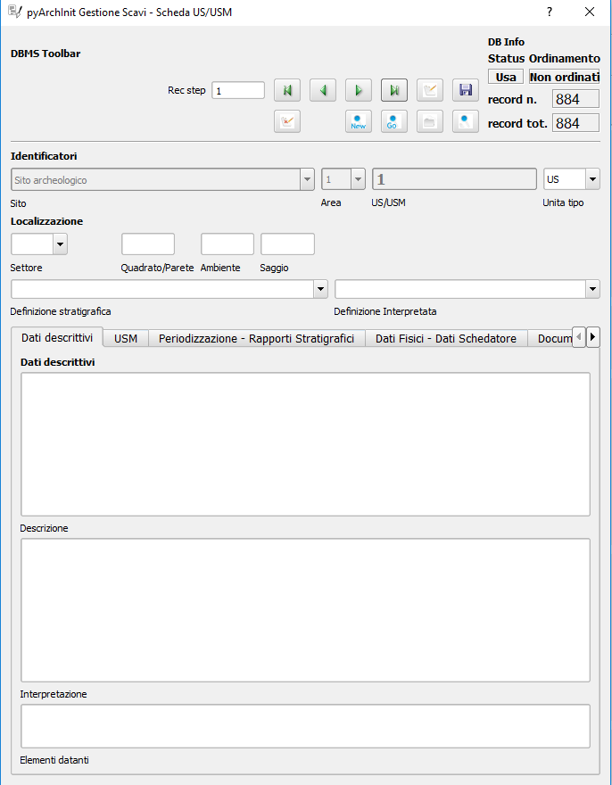
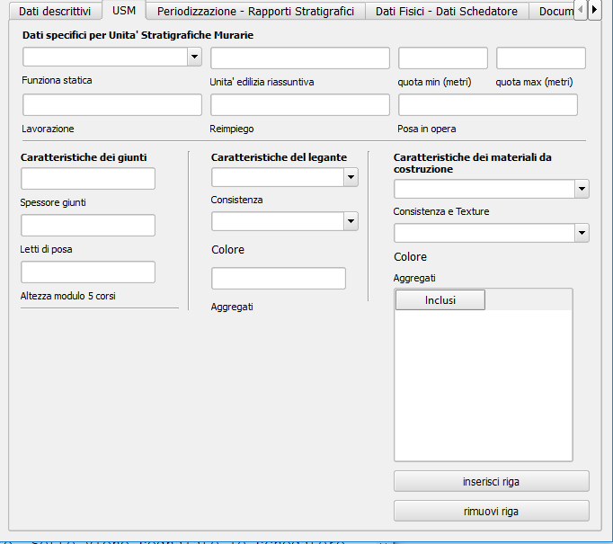
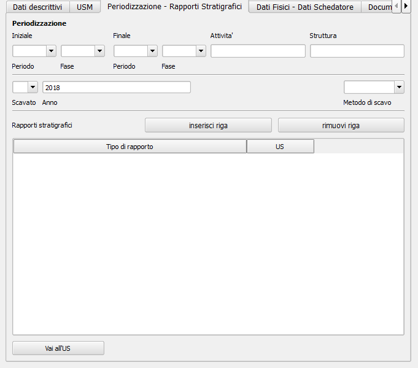
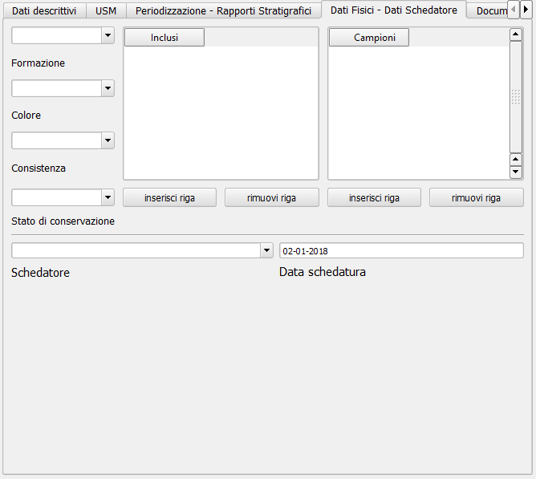
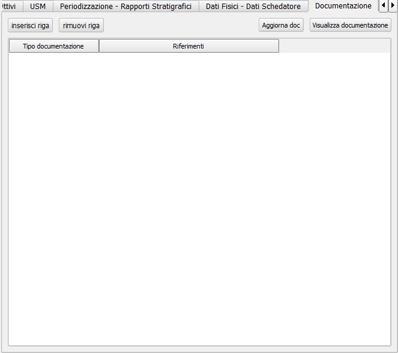

6. Le schede
Il plugin offre una serie di interfacce grafiche per il data entry delle informazioni alfanumeriche provenienti da contesti archeologici e un pacchetto di layers tabellari postgres/postgis per la localizzazione del dato georeferenziato.
Il plugin ha sostanzialmente 4 ambienti gestionali: data entry del dato alfanumerico tramite interfacce grafiche; layer tabellari per il disegno degli elementi cartografici; view sql per il join dei dati alfanumerici con i dati cartografici; serie di tools per le chiamate dinamiche in tempo reale dei dati e l’elaborazione di piante topografiche.
Le tabelle per il data entry sono:
Scheda Sito
Scheda Periodizzazione
Scheda Struttura
Scheda US-USM
Scheda Inventario Reperti
Scheda Campioni
Scheda Tafonomica
Scheda Individuo
Scheda Determinazione del sesso
Scheda Determinazione dell’età
Scheda di Catalogazione dei media
Scheda di gestione della documentazione
Scheda di gestione dei thesaurus
I tools per la gestione e controllo dei dati:
Sistema di controllo del tempo
Sistema di esportazione delle directory per i media
Sistema centralizzato di esportazione PDF
Sistema di ricerca immagini simili
Configurazione del database
Info sul plugin
Sistema di caricamento e backup del database
Sistema di impacchettamento in geopackage
Sistema di creazione mappe
Sistema di scaricamento dati Stazione Totale(TOPS)
6.1. Scheda Sito

Alla scheda di sito si accede tramite il pulsante della Toolbar di pyArchInit:
La scheda di sito serve ad impostare il nome del luogo o del progetto in cui si verifica un’indagine. Al momento si tratta di una scheda aperta composta essenzialmente da 7 campi:
Campo Sito: una volta salvato il nome del sito esso verrà caricato automaticamente nella lista a tendina di questa scheda e in tutte le altre schede che si appoggiano alla scheda di sito (strutture, reperti, ecc.). E” buona norma creare prima il nome del sito per sfruttarlo nelle altre schede e collegarlo con una mappa valori a tutti i layer che usano il sito.
Campo Definizione sito: la lista a tendina recupera i dati dal Thesaurus sigle.
Campo Descrizione sito: campo aperto per la descrizione del sito.
Campo Nazione: lista a tendina aperta gestita dalla GUI con il solo nome Italia.
Campo Regione: lista a tendina aperta gestita dalla GUI con le regioni italiane.
Campo Provincia: lista a tendina aperta gestita dalla GUI con le provincie italiane.
Campo Comune: lista a tendina aperta gestita dalla GUI. Nessun valore inserito.
La scheda possiede una sezione Tools:
Possibilità di caricare i layer per il disegno di tutti i layer informativi.
Caricamento dei layer informativi legati solo al sito analizzato.
Caricamento del layer puntuale del sito.
Caricamento del layer puntuale in base ad una ricerca.
Generazione arbitraria di schede US impostando il numero di schede da creare, l’area di scavo di riferimento (l’id US è composto inderogabilmente da sito, area, us), un valore di partenza scalato di una unità rispetto al primo che vogliamo far apparire; ad esempio schede da 1 a 10 di Area 2, sarà necessario impostare 10, 2 e come numero di partenza 0.
6.2. Scheda US-USM
Alla scheda US/USM si accede tramite il pulsante della Toolbar di pyArchInit:
La scheda US, è un adattamento della scheda ministeriale emessa dall’ICCD.
È divisa in varie sezioni a seconda della tipologia di dato.
Nella porzione in alto fissa, sono presenti i campi per l’identificazione dell’US/USM e relativi dati di localizzazione topografica all’interno del sito:
Campo sito: la lista a tendina recupera i dati dalla Scheda Sito. Campo obbligatorio per l’ID.
Campo Area: lista di valori chiusa controllata dalla GUI di tipo numerico. Campo obbligatorio per l’ID.
Campo US/USM: Campo aperto per l’assegnazione del numero di US. Solo Numerico. Campo obbligatorio per l’ID.
Campo Unità Tipo: Campo chiuso per l’assegnazione del tipo di US: US oppure USM
Campo Settore: Campo aperto per poter segnalare il settore di scavo.
Campo Quadrato/parete: Campo aperto per poter segnalare il quadrato di scavo o la parete dell’USM.
Campo Ambiente: Campo aperto per poter segnalare l’eventuale ambiente di scavo. Può ripetere il valore dell’Area di scavo, oppure vi si può assegnare un Ambiente di scavo. Non identifica necessariamente un ambiente antico, ma anche una divisione odierna dello scavo.
Campo Saggio: Campo aperto per poter segnalare se l’US appartiene ad un saggio di scavo.
Campo Definizione stratigrafica: Campo con lista a tendina aperta. Progettato per riprendere i dati dal Thesaurus che deve essere implementato, viene lasciato aperto per poter permettere differenti valori da quelli presenti. Si tratta della definizione oggettiva dell’US/USM.
Campo Definizione interpretata: Campo con lista a tendina aperta. Progettato per riprendere i dati dal Thesaurus che deve essere implementato, viene lasciato aperto per poter permettere differenti valori da quelli presenti. Si tratta della definizione basata sull’interpretazione dell’US/US.
Dati descrittivi
Sezione per l’inserimento della descrizione stratigrafica dello strato e della sua interpretazione estesa.
Campo descrizione: Campo aperto per la descrizione oggettiva dell’US/USM. Non deve contenere dati interpretativi. Non è permessa la ricerca al suo interno.
Campo interpretazione: Campo aperto per la descrizione interpretativa dell’US/USM. Non è permessa la ricerca al suo interno.
Campo elementi datanti: Campo aperto per la segnalazione di eventuali materiali datanti. Non è permessa la ricerca al suo interno. ATTENZIONE: NON SI SOSTITUISCE ALLA SCHEDATURA DEI REPERTI CHE VA FATTA IN INVENTARIO MATERIALI.
USM
Sezione dedicata alla descrizione di una Unità Stratigrafica Muraria.

Campo funziona statica: Campo aperto per la segnalazione della funzione statica.
Campo unità edilizia riassuntiva: Campo aperto per la segnalazione della’unità edilizia riassuntiva.
Campo lavorazione: Campo aperto per la segnalazione del tipo di lavorazione dell’USM.
Campo reimpiego: Campo aperto per la segnalazione della presenza di materiale di reimpiego.
Campo posa in opera: Campo aperto per la segnalazione della tecnica di posa in opera.
Campo quota min (metri): Campo aperto per la segnalazione della quota minima.
Campo quota max (metri): Campo aperto per la segnalazione della quota massima.
Sottosezione giunti
Campo spessore giunti: Campo aperto per la segnalazione della spessore giunti.
Campo letti di posa: Campo aperto per la segnalazione della spessore dei letti di posa.
Campo Altezza modulo 5 corsi: Campo aperto per la segnalazione dello spessore di 5 corsi.
Sottosezione caratteristiche del legante
Campo Consistenza: Campo aperto per la segnalazione della consistenza del legante.
Campo Colore: Campo aperto per la segnalazione del colore del legante.
Campo Aggreganti: Campo aperto per la segnalazione del tipo di aggreganti.
Sottosezione Caratteristiche dei materiali da costruzione
Campo consistenza e texture: Campo aperto per la segnalazione della consistenza e texture dei materiali impiegati.
Campo colore: Campo aperto per la segnalazione del colore dei materiali impiegati.
Campo aggregati: campo multiplo per segnalari gli aggregati contenuti nei materiali. Non è permessa la ricerca al suo interno.
Dati di scavo, Periodizzazione, Rapporti stratigrafici, Struttura
Sezione per l’inserimento della Periodizzazione iniziale e finale, attività e sigla della struttura di appartenenza. Qui vengono anche inseriti altri dati come l’anno di scavo e il metodo di scavo utilizzato. Infine, con un formato totalmente innovativo, vengono segnalati i singoli rapporti stratigrafici, presentati in forma di tabella, dove ogni singola riga rappresenta un rapporto stratigrafico. NB: 1 RAPPORTO STRATIGRAFICO 1 RIGA NEL CAMPO.
Il periodo e la fase sono divisi in periodo/fase iniziale e finale; se uno strato si genera e finisce la sua funzione all’interno di un periodo, solo la periodizzazione iniziale sarà compilata. Nel caso lo strato rimanga in vita per più fasi, avremo anche una periodizzazione finale. Uno script apposito prende dalla scheda di Periodizzazione i singoli codici e genera una stringa alfanumerica che può essere interrogata da pyArchInit per generare in automatico le piante di fase. L’US dell’esempio rimane in vita per tre fasi, dalla 3-3 alla 3-1, quindi riceverà 3 codici di periodo, come sotto è possibile vedere: 5/6/7.
Per le modalità di generazione del codice di periodo vedere la sezione Tools della scheda US.
Campo periodo iniziale: campo aperto per la segnalazione in numero arabo del periodo iniziale.
Campo fase iniziale: campo aperto per la segnalazione in numero arabo della fase iniziale.
Campo periodo finale: campo aperto per la segnalazione in numero arabo del periodo finale.
Campo fase finale: campo aperto per la segnalazione in numero arabo della fase finale.
Campo attività: campo aperto per la segnalazione dell’attività.
Campo struttura: campo aperto per la segnalazione della struttura. ATTENZIONE: il campo dovrà essere modificato perchè dovrà poter accogliere in una lista a tendina sia la sigla di una struttura preventivamente schedata nella scheda di Struttura e per poter segnalare più Strutture a cui essa appartiene. Al momento è possibile ricorrere a «/» per suddividere le sigle di Struttura ed eseguire in pyarchinit_us_view e pyarchinit_quote_view una ricerca di tipo like per poter andare a sfruttare la ricerca della presenza di una sigla tra «/».
Campo scavato: Lista si/no per segnalare se l’US è stato totalmente scavata.
Campo anno: campo aperto per segnalare l’anno di indagine dell’US.
Campo rapporti stratigrafici: campo multiplo in cui è necessario specificare i singoli rapporti stratigrafici (vedi sopra).
ATTENZIONE IL CAMPO RAPPORTI STRATIGRAFICI E” DIRETTAMENTE CONNESSO CON IL SISTEMA DI REALIZZAZIONE DEL MATRIX E DELL’ORDINE DEI LAYER. NON ESSENDO UNA TABELLA RELAZIONALE, QUALORA SI DECIDA DI RENDERLA UNA TABELLA SEPARATA, ANDRA” MODIFICATO TUTTO IL CODICE PRESENTE NELLE VARIE SEZIONI MATRIX E ORDINE DEI LAYER.
Dati fisici e dati schedatura
Sezione per l’inserimento dei dati fisici dell’Unità Stratigrafica quali: formazione, colore, consistenza, stato di conservazione, inclusi e campionature. Sotto viene segnalato lo schedatore e la data di redazione della scheda.
Campo formazione: lista a tendina per la segnalazione della formazione dell’US: naturale o antropica.
Campo Colore: lista a tendina per la segnalazione del colore: controllato dalla GUI in futuro dovrebbe essere collegato al Thesaurus Sigle.
Campo Consistenza: lista a tendina per la segnalazione della consistenza: controllato dalla GUI in futuro dovrebbe essere collegato al Thesaurus Sigle.
Campo Stato di conservazione: lista a tendina per la segnalazione dello stato di conserevazione.
Campo inclusi: campo multiplo per la segnalazione degli inclusi della matrice. ATTENZIONE: non vanno segnalati eventuali reperti se non si ritiene che essi facciano parte degli inclusi. Per esempio ceramica sbriciolata volontariamente per aumentare l’impermeabilizzazione dell’US, va segnalata in questo campo e potrà anche essere schedata nell’Inventario Materiali. Un boccale rinvenuto in una US NON E” un incluso. Eventualmente potrebbe essere utile segnalare un campo di Nr. Inventario qualora un incluso possa essere schedato come materiale.
Campo campioni: campo multiplo per la segnalazione dei campioni raccolti. ATTENZIONE: non si sostituisce all’inventario Campioni nella scheda apposita. Potrebbe essere utile aggiungere un campo per segnalre il numero di Campione assegnato nella relativa scheda.
Campo Schedatore: lista a tendina aperta per la segnalazione dello schedatore.
Campo Data di schedatura: campo data per la segnalazione della data di schedatura.
Documentazione
In questa apposita sezione è possibile segnalare i singoli tipi di documentazione prodotti: piante, sezioni, fotografie, diapositive, ecc.
!!!ATTENZIONE!!! Al momento si tratta di un sistema work in progress. Lo scopo sarebbe quello di assegnare 1 riga del campo per ogni singola tipologia di documentazione prodotta e schedata nella scheda di Documentazione (realizzata da Simone Berto). Quindi ogni riga corrisponde ad una sola pianta oppure un prospetto oppure una sezione e così via, segnalando il tipo di documentazione e il numero di riferimento che costituiscono gli ID della scheda di Documentazione. Al momento il sistema risulta incompleto. NON E” POSSIBILE FARE RICERCHE AL SUO INTERNO.

6.3. Scheda Reperti

6.4. Scheda Campioni

6.5. Scheda Periodizzazione

6.6. Scheda Strutture

6.7. Scheda Tombe

6.8. Scheda Individui

6.9. Scheda Unità Topografiche

6.10. Scheda Documentazione

6.11. Scheda Gestione Immagini

6.12. Scheda Esportazione PDF
6.13. Scheda Esportazione Immagini

6.14. Scheda Download Excel

6.15. Scheda Time Manager

6.16. Scheda Importazioni dati TOPS

6.17. Scheda Crea la tua Mappa

6.18. Scheda Impacchetta per Geopackage

6.19. Scheda Configurazione plugin

6.20. Scheda Thesaurus Sigle

6.21. Scheda Gestione DB